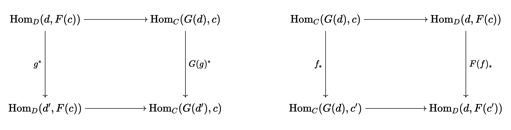

A crash course in derived functors
Table of Contents
Originally posted:
1. Introduction
The goal of this blog post is to introduce some of the most basic ideas surrounding derived categories, and then apply them to constructing homology and cohomology theories (for example, the Hochschild homology of a bimodule).
2. Derived functors and other category theory
The goal of the first section of this post is to explain some basic categorical ideas which will be used at length in the next section. We start simple, building to the correct intuition for adjoint functors. Note that we will invoke some of the ideas developed in a previous blog post on the fundamental groupoid Seifert-Van Kampen theorem, so you, the reader, may have to consult this piece at certain times.
2.1. Adjoint functors
Definition 2.1.1 (Adjoint, informal). The best, succinct way to think of a functor \(G : D \rightarrow C\) adjoint to functor \(F : C \rightarrow D\) is that \(G\) is the most efficient way to systematically "solve the problem" posed by \(F\). If \(F\) is, for example, a forgetful functor which throws away some of the structure of category \(C\), is there a method with reconstructs an element of \(D\) which imposes the minimal amount of extra structure possible? If such a method exists, and is functorial, in the sense that it works the same for any object, then it can be described via a functor \(G : D \rightarrow C\) which is adjoint to \(F\).
Definition 2.2.2 (Adjoint, first definition). Let us now be more precise. We say that functors \(F : C \rightarrow D\) and \(G : D \rightarrow C\) are adjoint is there exists a "natural bijection" between the morphism sets \(\text{Hom}_D(d, F(c))\) and \(\text{Hom}_C(G(d), c)\) for \(d \in \text{Obj}(D)\) and \(c \in \text{Obj}(C)\). By "natural", we mean that for a fixed \(c \in \text{Obj}(C)\) or a fixed \(d \in \text{Obj}(d)\), the following diagrams commute:

for every arrow \(g : d' \rightarrow d\) in \(D\) and \(f : c \rightarrow c'\) in \(C\).
Even though this definition is the most common, it is not the most intuitive. A better definition is via universal morphisms. When we find an object which satisfies a universal property, we are effectively finding the "most efficient" object which satisfies some desired property. An adjoint functor is a technique to define such universal objects at a global, categorical level, rather than locally. To define adjoints via this intuition, we require a bit more background.
Definition (Comma category). Let \(F : C \rightarrow D\) be a functor, let \(x\) be an object of \(D\). The comma category \((x \downarrow F)\) is defined as follows:
- The objects are pairs \((c, f : x \rightarrow F(c))\) for objects \(c \in \text{Obj}(C)\).
- The morphisms between \((c, f)\) and \((c', f' : x \rightarrow F(c'))\) are morphisms \(h : c \rightarrow c'\) in \(C\) such that \(F(h) \circ f = f'\).
It is very easy to verify that we have defined a valid category. We can also define another type of comma category, \((F \downarrow x)\), where we look at objects of the form \((c, f : F(c) \rightarrow x)\), and define the morphisms in the obvious way. Comma categories are a good way to restrict a particular category to only include those elements which exhibit certain properties which are preserved under certain maps.
Example For example, the category of pointed topological spaces is precisely \((\cdot \downarrow \textbf{Top})\): a fact which is very easy to verify.
Definition (Universal morphism). A universal morphism is an initial object in \((x \downarrow F)\), a particular comma category, or a terminal object in \((F \downarrow x)\). Intuitively, a universal morphism encodes a property which characterizes some object up to isomorphism. Recall that if \(C\) is a category, an initial object is some \(c \in \text{Obj}(C)\) such that for every other \(c' \in \text{Obj}(C)\), there is precisely one arrow \(c \rightarrow c'\). A terminal object is when there is precisely one arrow \(c' \rightarrow c\).
In the case of the comma category, the existence of a single morphism from an initial object \((c, f : x \rightarrow F(c))\) to some other object \((c', f' : x \rightarrow F(c'))\) is identical to the condition that for any objects \(c'\) and arrow \(f' : x \rightarrow F(c')\), there is a unique arrow \(h : c \rightarrow c'\) such that \(F(h) \circ f = f'\). The other kind of universal morphism, defined via terminal objects, is characterized similarly.
Corollary A universal morphism is unique up to unique isomorphism in the comma category: this follows immediately from the fact that initial and terminal objects are unique up to unique isomorphism. In other words, if an object \(c\) satisfies a universal property (i.e. \((c, f : x \rightarrow F(c))\) is initial in the comma category), then it is unique up to "isomorphism which preserves \(x\)".
Example The tensor algebra of a vector space is a great example of an object characterized via a universal property. In particular, given some vector space \(V\) over \(k\), the property which characterizes the tensor algebra \(T(V)\) is that any linear map \(V \rightarrow A\) of \(V\) to a \(k\) -algebra extends uniquely to an algebra homomorphism from \(T(V)\) to \(A\). Let \(\text{For} : \textbf{Alg}_k \rightarrow \textbf{Vect}_k\) be the forgetful functor which sends a \(k\) -algebra to its underlying vector space. We take \(F\) to be \(\text{For}\), and we take \(x = V\). Our desired object is an initial object \((T(V), f : V \rightarrow \text{For}(T(V)))\) in the comma category, which is to say that for any \(A \in \textbf{Alg}_k\) and linear map \(f' : V \rightarrow \text{For}(A)\), there must be a unique algebra homomorphism \(g : T(V) \rightarrow A\) such that \(\text{For}(g) \circ f = f'\).
Remark Returning to our initial justification, it should be clear (especially from the above example) that writing down a universal morphism is dependent on a particular choice of object \(X \in D\) relative to which we define a comma category. One way to interpret the utility of an adjoint functor is that it "chooses every \(X\) at once" in a functorial manner. In the above example, the intuition that "\(T\) should be a functor in its own right", is correct, and is exactly the motivation for adjoint functors.
Definition (Adjoint, second definition). A functor \(F : C \rightarrow D\) is said to be a left-adjoint functor if for each \(d \in D\), there is a universal morphism from \(F\) to \(d\). In this case, we have final objects \((G(d), \varepsilon_d : F(G(d)) \rightarrow d)\) in the repsective comma categories. Spelled out, given any other object \((c, f : F(c) \rightarrow d)\) in the comma category, there is a unique map \(g : c \rightarrow G(d)\) such that \(\varepsilon_d \circ F(g) = f\). Our goal is to show that the assignment of \(d \in D\) to objects in \(C\) via \(G\) is, in fact, a functor, and that \(G(f)\) for some \(f : d \rightarrow d'\) is given uniquely by
\begin{equation} \varepsilon_d \circ F(G(f)) = f \circ \varepsilon_{d'} \end{equation}To see this, note that
Example 2.1.1 (Free groups). I went into a lot of detail regarding the construction of free groups in my blog post on groupoid Seifert-Van Kampen theorem. This is probably one of the most accessible examples of an adjoint functor.
In particular, suppose we have set \(S\). For each element \(s \in S\), we can define a infinite cyclic group which is labelled by \(s\). For convenience, we take elements of this cyclic group to be denoted by \(s^n\) for \(n \in \mathbb{Z}\), and we define \(\cdot\) as the operation \(s^{n} \cdot s^{m} = s^{n + m}\). We also use \(1\) to denote \(s^0\). Call this group \(G_s\). We showed in the Seifert-Van Kampen post that there exists an external free product of the groups \(G_s\), for all \(s \in S\), which we denote \(G_S\). We actually had a particular name for \(G_S\): the free group on generators \(S\). Remember how we defined the external free product of groups: we said that \(G\) was an external free product of \(G_{\alpha}\) if there existed monomorphisms \(i_{\alpha} : G_{\alpha} \rightarrow G\) such that for any collection of morphisms \(\varphi_{\alpha} : i_{\alpha}(G_{\alpha}) \rightarrow H\), there exists a unique morphism \(\varphi : G \rightarrow H\) which extends the \(\varphi_{\alpha}\). For the particular case that the \(G_{\alpha}\) are the cyclic groups \(G_s\). Note that each monomorphisms \(i_{s} : G_s \rightarrow G\) can be uniquely represented by a unique element of \(G\). Thus, each collections of monomorphisms \(\{i_s\}_{s \in S}\) can be uniquely represented by a set map \(i : S \rightarrow G\). Thus, one can rephrase the property which characterizes the free group as follows: \(G\) is a free group of generators \(S\) if there is a set map \(i : S \rightarrow G\) such that each \(\langle i(s) \rangle\) is infinite cyclic, and for any collection of morphisms, \(\varphi_s : \langle i(s) \rangle \rightarrow H\), there is a unique \(\varphi : G \rightarrow H\) extending them.
Something we can notice: for some set map \(i : S \rightarrow G\) to satisfy the desired criterion, it must a priori be injective. If we had \(i(s) = i(s') \neq 0\), and we chose different homomorphisms \(\varphi_s, \varphi_{s'}\) into some group (which we can always do), then we obviously couldn't find an extension \(\varphi\). It follows immediately that any collection of \(\{\varphi_s\}\) can be uniquely represented as a set map \(f : S \rightarrow H\). Thus, the property we must satisfy becomes the following: we need an a set map \(i : S \rightarrow G\) such that for any set map \(f : S \rightarrow H\) (where \(H\) is a group), there exists a unique morphism \(\varphi : G \rightarrow H\) such that \(\varphi \circ i = f\). In addition, we require that all of the subgroups \(\langle i(s) \rangle\) are free. As it turns out, we can drop this assumption. Suppose \(\langle i(s) \rangle\) were not free, so \(i(s)^n = 1\) for some \(s\) and \(n \neq 0\). Pick \(f : S \rightarrow \mathbb{Z}\) to send every \(s \in S\) to \(2\), let \(\varphi : G \rightarrow \mathbb{Z}\) be the unique morphism where \(\varphi \circ i = f\). We then must have \(\varphi(i(s)) = f(s) = 2\), but we also have
\begin{equation} 0 = \varphi(1) = \varphi(i(s)^n) = \varphi(i(s))^n = 2n \neq 0 \end{equation}which is a contradiction. Thus, \(G_S\) is a free group with generators \(S\) if there is a set map \(i : S \rightarrow G_S\) such that for any group \(H\) and set map \(f : S \rightarrow H\), there exists a unique morphism \(\varphi : G_S \rightarrow H\) with \(\varphi \circ i = f\).
Let us recap what we have done: given some \(S \in \text{Obj}(\textbf{Set})\), we have described the property some \(G = \text{Free}(S) \in \text{Obj}(\textbf{Grp})\) must satisfy for \(\text{Free}(S)\) to be a "free group with generators \(S\)", in terms of morphisms in the categories \(\textbf{Set}\) and \(\textbf{Grp}\). This is a local procedure: we have "defined" \(\text{Free}(S)\) via a particular set \(S\) in \(\textbf{Set}\) and arrow \(i\) from \(S \in \textbf{Set}\) to \(\text{For}(\text{Free}(S)) \in \text{For}(\textbf{Grp})\) (where \(\text{For}\) is the forgetful functor which gets rid of group structure). As it turns out, this strategy works globally: we can actually think of \(\text{Free}\) as a functor from \(\textbf{Set}\) to \(\textbf{Grp}\): it is adjoint to \(\text{For}\), the forgetful functor. This is the prototypical example one should always carry.
Let us
2.2. Abelian categories
2.3. Snake lemma
I am going to dedicate this (short) section to proving the snake lemma: a basic result in homological algebra which implies other classic results like the zig-zag lemma. This result will be critical in the construction of derived functors.
2.4. Derived functors
2.5. \(\text{Tor}\) and \(\text{Ext}\)
3. Applications
3.1.
3.2. Hochschild homology
The jumping-off point for Hochschild homology is the desire for a "natural" homology theory for algebras over rings.